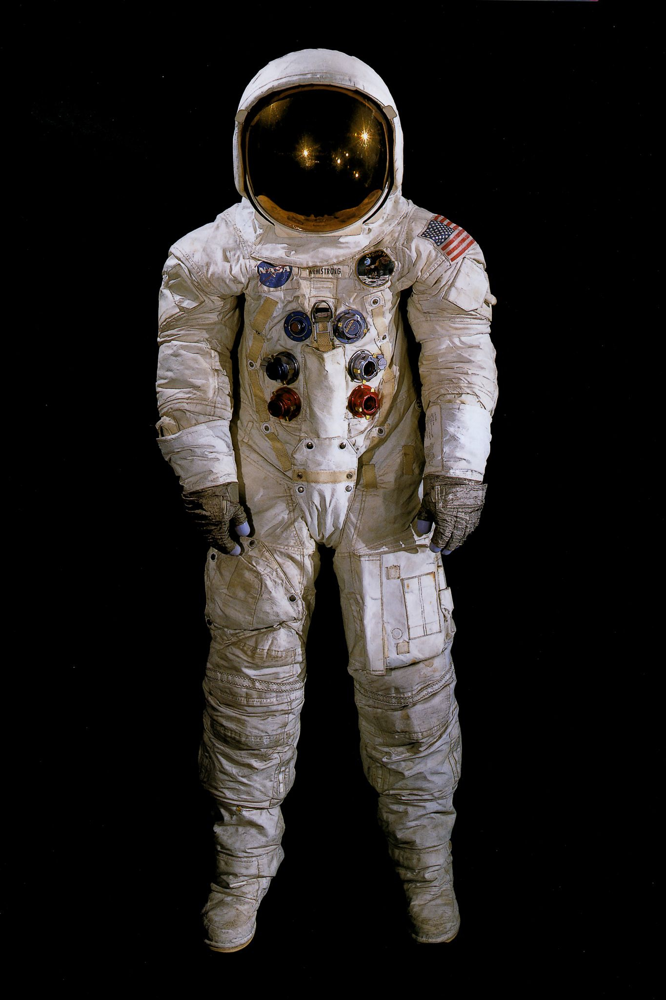

Hi! I'm Arthur, a student in Networking and Telecommunications at the IUT Clermont Auvergne.
Education
IUT Clermont Auvergne — 2024 to Present
I'm currently in my second year of a BUT in Networking & Telecommunications at the IUT of Clermont Auvergne.
Pierre Joël Bonté High School — 2021 to 2024
I followed the "Générale" path throughout high school.
From the second year onward, I took classes in Computer Science, Mathematics, Physics, and
Chemistry.
In my final year, I focused on Mathematics and Computer Science, dropping Physics and
Chemistry.
I graduated from high school with honors.
Experience
BAFA Vocational Training — July 31 to August 18, 2023
I completed my BAFA vocational training (Certificate of Aptitude for Youth Work) in a leisure center
in the town of Riom. I spent three weeks as a trainee youth leader.
During this time, I was responsible for a group of 2–4-year-olds, followed by a group of
7–8-year-olds, working alongside two qualified youth workers.
This experience allowed me to develop my teamwork skills to collaborate effectively with my
colleagues. It also strengthened my patience, as I had to understand and respond appropriately to
the various needs of the children.
Corn Detasseling — June 14 to June 25, 2021
I took part in corn detasseling during the summer of 2021. This experience allowed me to discover the world of work and to develop my teamwork skills by collaborating with farmers to ensure the quality and productivity of their harvests. It especially helped me strengthen my team spirit.